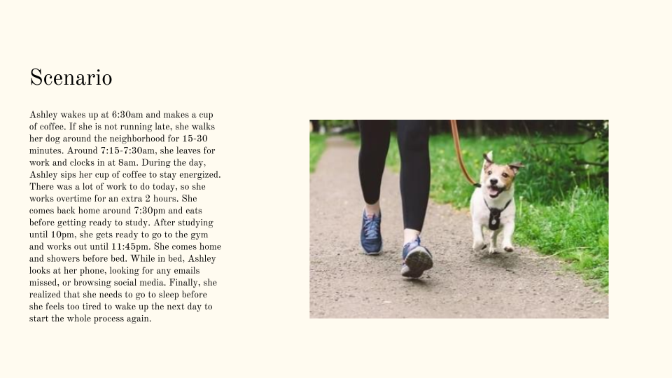

Sleep Tracking App
The parameters of this project aim to address an important topic related to health and well-being. Getting quality sleep has been shown to improve physical and mental health. For 10 weeks, my Human Computer Interaction project group worked to create a solution to the following problem:
"How do we help encourage young working Americans to improve their sleeping habits and counteract sleep deprivation?"
Competitive Analysis:
To better analyze our problem statement, we culminated research on other sleep tracking applications to study existing solutions and potential weaknesses.
One significant gap identified across the various apps we each analyzed is their potential underutilization by the target audience of young working-class Americans. The apps all aimed to reach a general audience, rather than targeting a specific group. While these apps provide good features for monitoring and analyzing sleep patterns, they fall short of addressing the unique challenges faced by the targeted group. This includes issues such as work-related stress, irregular schedules, or lifestyle factors that significantly impact sleep quality. Furthermore, the apps fail to address the multiple possible circumstances that would affect an individual’s sleep. Thus, they end up giving out general information as a one-size-fits-all model.
User Research:
We then each conducted interviews with young, working professionals ranging from full-time students with part-time internships to full-time working individuals. We found these common patterns from participants:
Key Insights:
1. People are too glued to their phones to fall asleep in a timely manner.
Nearly 83% of college students use their cell phones within 1 hour of going to bed, and around 66% check their cell phone notifications before getting out of bed in the morning1.
2. People who drink caffeine throughout the day have trouble falling asleep at night.
Stimulants, such as coffee, should be avoided before sleep. It's recommended to refrain from consuming caffeine 3 to 6 hours before bedtime, depending on the amount ingested2.
3. Trouble with sleeping due to changing work schedules.
Individuals working traditional 9-to-5 shifts are usually awake during daylight hours, which aligns with their body's natural circadian rhythms. However, for shift workers, their work and sleep schedules often conflict with the natural cues for wakefulness and sleep3.
From these insights, we were able to create personas.
Personas:
Mockups:
Low-Fidelity Prototypes
With the user research we gathered and the personas we created, we highlighted the most common user needs and traits. Each team member then drew up low-fi prototypes based on these insights to communicate relevant features that could be included in the design of our app.

This interface layout will display the app's core features. The three main icons that show upon scrolling will lead to more detailed pages of the app's main features.
Mid-Fidelity Prototypes
After creating our low-fidelity prototypes separately, we gathered to compare ideas regarding the functionalities we made.

(1) This prototype assists in creating schedules based on the user's wake-up times. Users can input their daily tasks, and the app will generate a personalized schedule around these times, including recommended wake-up times.
(2) This prototype aims to help users reduce device usage before bedtime by locking their phones and other devices for a specified duration. Users can set the lock duration and will be presented with a confirmation screen to ensure they want to proceed with locking their devices.
(3) This prototype displays a list of scientifically proven foods that are beneficial or detrimental to consume before bed.Additionally, the app will feature daily rotating food-related quotes to provide helpful insights for users.
High-Fidelity Prototypes
Next, we expanded on each concept from our initial storyboards and prototypes. The following prototypes were developed based on our mid-fidelity sketches.
Usability Evaluation
Throughout this process, we engaged in a peer review to evaluate our prototypes and determine if the interface allowed participants to effectively perform their tasks, identifying what was clear and unclear. This usability evaluation highlighted several areas for improvement to enhance user understanding and interaction with the interface. By addressing these issues and implementing the suggested changes, the interface will become more user-friendly and intuitive.


(4) An indicator for navigating the homepage proved to be useful in helping users understand how to properly use the app. We enhanced this by adding a subtle line of text with an arrow, providing clear instructions on how to locate the rest of the page's components.
(5) To clarify the purpose of each page and the meaning of each icon, we added a feature where hovering over an icon displays a summary of the page's content. This ensures that users are fully aware of what to expect when they press the button to navigate to a specific screen.
Our final prototype of the app was taking what we had for our high fidelity and making the pages more visually clear based on feedback we received.
Reflection
Over the quarter, while designing this application to encourage young working Americans to improve their sleeping habits and counteract sleep deprivation, we faced challenges and saw our project evolve from conceptualization to high-fidelity prototypes. The user research phase was particularly enlightening, as we engaged with professionals from diverse backgrounds and gained insights into the barriers to quality sleep. These insights informed our design choices and helped us resonate with our target audience.
The iterative design process was crucial, allowing us to refine our prototypes based on feedback from peers and our professor. Each iteration brought us closer to our final prototype, incorporating features like gamification, social elements, and activity recommendations for an engaging user experience. Flexibility and adaptability were key, as we navigated unexpected challenges and pivoted our approach when necessary.
Looking back, we appreciate the importance of human-centered design in addressing real-world problems. While there is always room for improvement, we are proud of our practical application of knowledge and our contribution to a meaningful mental and physical health issue. Ultimately, this was a rewarding experience.
References
1. Joshi SC, Woodward J, Woltering S. Nighttime Cell Phone Use and Sleep Quality in Young Adults. Sleep and Biological Rhythms. 2021;20. doi:https://doi.org/10.1007/s41105-021-00345-6
2. Drake C, Roehrs T, Shambroom J, Roth T. Caffeine Effects on Sleep Taken 0, 3, or 6 Hours before Going to Bed. Journal of Clinical Sleep Medicine. 2013;09(11). doi:https://doi.org/10.5664/jcsm.3170
3. Salamon M. Shift Work Can Harm Sleep and Health: What Helps? Harvard Health. Published February 28, 2023. https://www.health.harvard.edu/blog/shift-work-can-harm-sleep-and-health-what-helps-202302282896
Final Design
"How do we help encourage young working Americans to improve their sleeping habits and counteract sleep deprivation?"
After many iterations, our app now consists of a research-backed application and UI/UX design that integrates various features to encourage better sleeping habits. This helps address user needs such as establishing healthy sleep routines and counteracting sleep deprivation. Over the past 10 weeks, the design process has focused on creating an effective and user-friendly application. By taking into account feedback from peer reviews, we prioritized enhancing navigation clarity for users. I've continually aimed to improve the user experience through iterative design and feedback integration, striving to apply design principles effectively throughout the project.